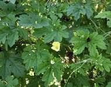

Uses & Preparation:
• Diabetes Mellitus (Mild, Non-Insulin Dependent) – Eat one cup of cooked leaves daily. You can also squeeze the bitter melon fruit and drink at least one tablespoon daily.
• Diabetes Mellitus (Mild, Non-Insulin Dependent) – Eat one cup of cooked leaves daily. You can also squeeze the bitter melon fruit and drink at least one tablespoon daily.